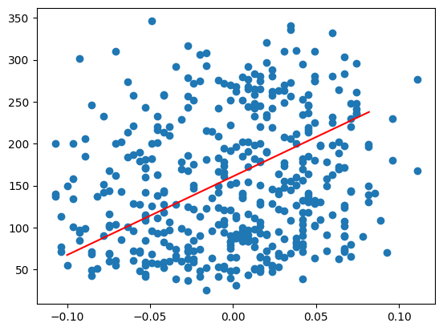
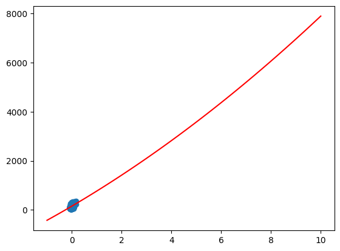

#Tugas 1 : Linear Regression
Buat Constructor dan Inisialiasi Model#
import numpy as np
import pandas as pd
class LinearRegression:
def __init__(self,learning_rate=0.01,epoch=100):
self.learning_rate = learning_rate
self.epoch = epoch
self.weight = None
self.bias = None
def fit(self,X,y):
n_samples,n_features = X.shape
self.weight = np.zeros(n_features)
self.bias = 0
for i in range(self.epoch):
for j in range(n_samples):
y_pred = np.dot(X[j],self.weight) + self.bias
error = y[j] - y_pred
self.weight += self.learning_rate * error * X[j]
self.bias += self.learning_rate * error
def predict(self,X):
y_pred = np.dot(X,self.weight) + self.bias
return y_pred
def expand_feature(self,X,degree):
X_expand = [X]
for a in range(2,degree+1):
X_expand.append(np.power(X,a))
return np.column_stack(X_expand)
def calculate_r_square_error(self,y_test, y_pred):
n_samples = len(y_test)
residual = y_test - y_pred
ss_residual = np.sum(residual ** 2)
ss_total = np.sum((y_test - np.mean(y_test)) ** 2)
r_square = 1 - (ss_residual / ss_total)
return r_square
from sklearn.datasets import load_diabetes
diabetes = load_diabetes()
X = diabetes.data
y = diabetes.target
model = LinearRegression()
model.fit(X,y)
y_pred = model.predict(X)
y.shape
(442,)
Menggunakan Data baru#
X_new = np.linspace(-0.10,0.1,100)
X_new = X_new.reshape(-1,10)
y_new = model.predict(X_new)
data = pd.DataFrame(X_new)
data
| 0 | 1 | 2 | 3 | 4 | 5 | 6 | 7 | 8 | 9 | |
|---|---|---|---|---|---|---|---|---|---|---|
| 0 | -0.100000 | -0.097980 | -0.095960 | -0.093939 | -0.091919 | -0.089899 | -0.087879 | -0.085859 | -0.083838 | -0.081818 |
| 1 | -0.079798 | -0.077778 | -0.075758 | -0.073737 | -0.071717 | -0.069697 | -0.067677 | -0.065657 | -0.063636 | -0.061616 |
| 2 | -0.059596 | -0.057576 | -0.055556 | -0.053535 | -0.051515 | -0.049495 | -0.047475 | -0.045455 | -0.043434 | -0.041414 |
| 3 | -0.039394 | -0.037374 | -0.035354 | -0.033333 | -0.031313 | -0.029293 | -0.027273 | -0.025253 | -0.023232 | -0.021212 |
| 4 | -0.019192 | -0.017172 | -0.015152 | -0.013131 | -0.011111 | -0.009091 | -0.007071 | -0.005051 | -0.003030 | -0.001010 |
| 5 | 0.001010 | 0.003030 | 0.005051 | 0.007071 | 0.009091 | 0.011111 | 0.013131 | 0.015152 | 0.017172 | 0.019192 |
| 6 | 0.021212 | 0.023232 | 0.025253 | 0.027273 | 0.029293 | 0.031313 | 0.033333 | 0.035354 | 0.037374 | 0.039394 |
| 7 | 0.041414 | 0.043434 | 0.045455 | 0.047475 | 0.049495 | 0.051515 | 0.053535 | 0.055556 | 0.057576 | 0.059596 |
| 8 | 0.061616 | 0.063636 | 0.065657 | 0.067677 | 0.069697 | 0.071717 | 0.073737 | 0.075758 | 0.077778 | 0.079798 |
| 9 | 0.081818 | 0.083838 | 0.085859 | 0.087879 | 0.089899 | 0.091919 | 0.093939 | 0.095960 | 0.097980 | 0.100000 |
import matplotlib.pyplot as plt
plt.scatter(X[:,0],y)
plt.plot(X_new[:,0],y_new,color='red')
plt.show()

Menggunakan Fitur dari Expand Fitur#
X_expand = model.expand_feature(X[:,2],2)
model = LinearRegression()
model.fit(X_expand,y)
y_pred = model.predict(X_expand)
# Contoh penggunaan
r_square = model.calculate_r_square_error(y, y_pred)
print("R-Square Error:", r_square)
R-Square Error: 0.2964081804377252
X_new2 = np.linspace(-1,10,100)
X_new2 = model.expand_feature(X_new2,2)
y_new = model.predict(X_new2)
plt.scatter(X[:,2],y)
plt.plot(X_new2[:,0],y_new,'r-')
plt.show()
